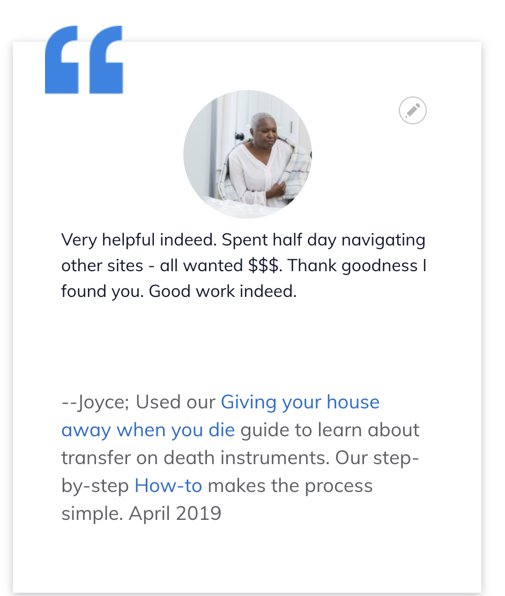

Testimonials Content Type¶
The testimonials content type is used to store positive stories that can be highlighted on the home page and within content.
The content type supports:
a person name.
a person image. This image should be resized to be relatively small before being uploaded to decrease page load time on the home page and in content as it is a small image generally. 225x190 is a good size.
Legal issue the person got help with. This is the narrative ILAO provides that includes what the user was looking for, what content (with links) the user accessed. It also includes the month and year of the feedback. It should not have any leading – or other characters
Body. This is where the quote from the user feedback should go.
Primary legal category.
The date submitted
The feedback source.

How to create a testimonial¶
Testimonials should be created from positive feedback.
Add the person’s name. If we have the real name of the user, use their first name. Otherwise, pick a name for anonymous quotes. Gender-neutral names are preferred for fictionalized names.
From stock photos, add an image for the person.
Write a legal issue the user got help with. This should be written in the style of “[Verb] our [name of resource] to [common task associated with the content]. Month Year” Examples:
For a Guide or Text article, Read our Getting a divorce guide to learn their rights when ending a marriage. June 2020, Used our modifying child support guide to learn about changing payment amount after a job loss December 2020.
For a video, Watched our “My rights under IDEA” to understand special education rules or Watched our “Legal considerations when returning from military deployment” to learn about laws designed to make the transition home easier for servicemembers.
For a How-to, or tool: Used our “Responding to an eviction case” to decide how to respond after receiving court documents from their landlord. Or Used our Criminal records tool for step-by-step instructions on clearing their adult criminal record.
For easy forms and other forms: Used our Divorce Easy Forms to create the legal court forms needed to file for divorce. Used our Unemployment Benefits Appeal Easy Forms to generate the letter and notice after being denied unemployment after a job loss.
Add the quote in the body field. This should not be edited.
Pick the best legal category the quote falls into.
Add the date the feedback was submitted. This allows us to ensure that old quotes are not displayed on the website.
Todo
Update our views to not require the date in text.
Home page quotes¶
Quotes can be added to the home page by checking the “Show on home page” box when adding or editing the testimonial. The checkbox is language specific.
Testimonials within legal content¶
Testimonials should be added to legal content on a routine basis. Please see our legal content guidelines for when and where to add these.
To insert a testimonial:
in the WYSIWG, click the E embed button
search for the testimonial name you want to include
Click next, then click Embed.
This will display the testimonial in the WYSIWYG. It may look funny but will be properly laid out and resized on the front-end.
What users see¶
When rendered on the home page:
the person image and name
the body as the quote
the “legal problem helped with” body under their name; the month and year are part of this field.

When embedded within legal content:
the person image
the body
– the person name
the legal problem they got help with field

Mobile:
